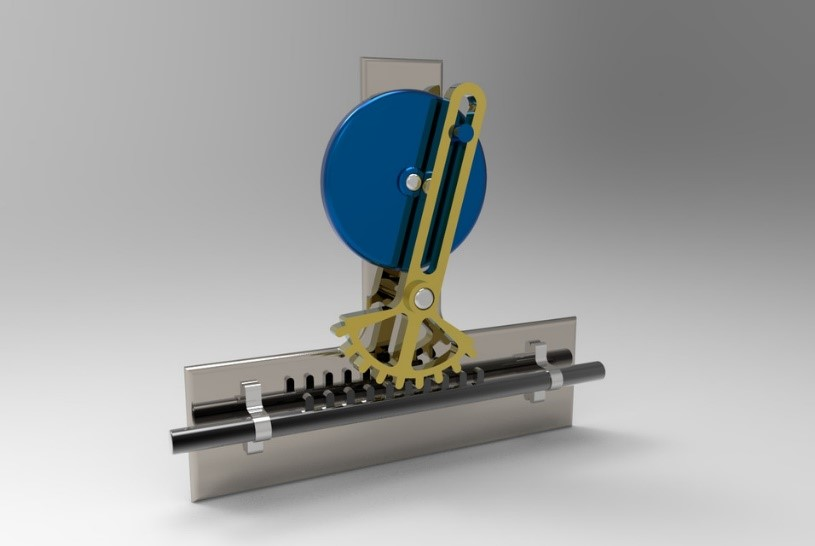

Reciprocating motion, also called reciprocation, is a repetitive up-and-down or back-and-forth linear motion. It is found in a wide range of mechanisms, including reciprocating engines and pumps. The two opposite motions that comprise a single reciprocation cycle are called strokes.
The reciprocating motion of a pump piston is close to, but different from, sinusoidal simple harmonic motion. Assuming the wheel is driven at a perfect constant rotational velocity, the point on the crankshaft which connects to the connecting rod rotates smoothly at a constant velocity in a circle. Thus, the displacement of that point, is indeed exactly sinusoidal. However, during the cycle, the angle of the connecting rod changes continuously. So, the horizontal displacement of the "far" end of the connecting rod (i.e., connected to the piston) differs slightly from sinusoidal. Circumstances where the wheel is not spinning with perfect constant rotational velocity, such as a steam locomotive starting up from a stop, are very much not sinusoidal. So basically, a up and down a repetitive up-and-down or back-and-forth linear motion.

NEXT